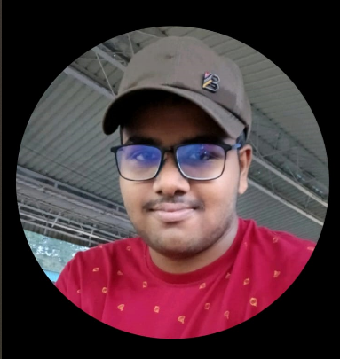

|  | | | | | | | | | | | | | | | | | |
HI,I AM KOUSHIK A COMPUTER SCIENCE STUDENT FROM NIT ROURKELA.
I AM A TECH ENTHUSIAST AND I BRING PROFICIENCY IN C++,C,HTML,CSS,JAVA SCRIPT AND REACT AND I AM EAGER TO CONTRIBUTE MY SKILLS TOWARDS MY PASSION.I AM A PART OF VARIOUS TECHNICAL CLUBS LIKE ASTRO NITR,GTA TAKING LEAD AS ONE OF THE WEB DEV TEAM MEMEBRS.
I ALSO TAKE THE LEAD AS ICS MENTOR GUIDING 10 FIRST YEAR STUDENTS AT NIT ROURKELA. |